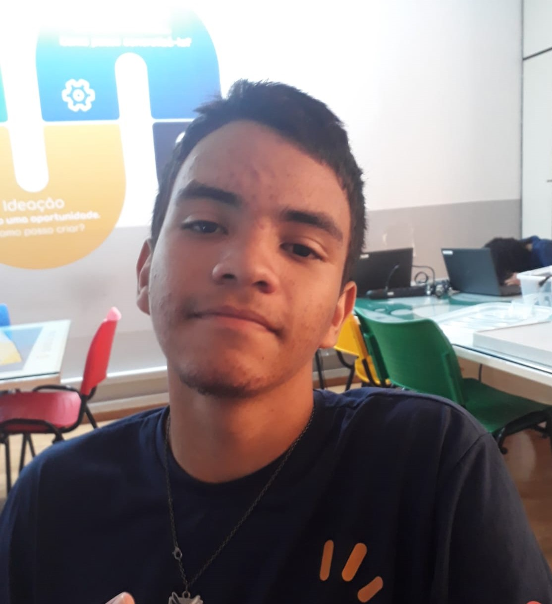

Curriculo Vitae
Jose Walter De Oliveira junior
DADOS PESSOAIS

Brasileiro, Solteiro, 15 Anos
E-mail: walter.jose@alunoescolassociais.org.br
Contato:(11)973584366
OBJETIVO
- Em busca da primeira oportundade de emprego.
FORMAÇÃO
- FUNDAMENTAL II: Recanto Mônica II
- FUNDAMENTAL II: Fernando De Barros Pinto
- Ensino médio técnico em tecnologia: : Escola Social Marista Irmão Acácio -2023 – Em Andamento
EXPERIÊNCIAS
HABILIDADES E COMPETÊNCIAS
- Boa comunicação
- Bom em trabalho em equipe
- Perceptivo